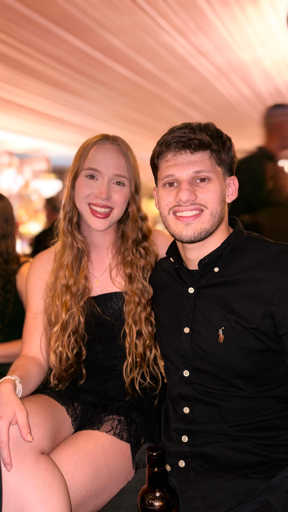
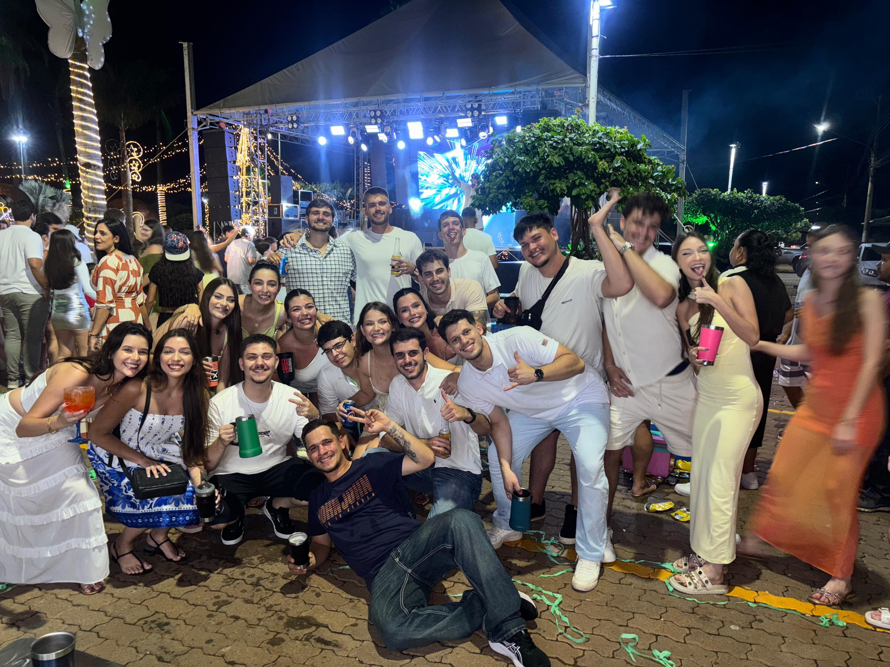
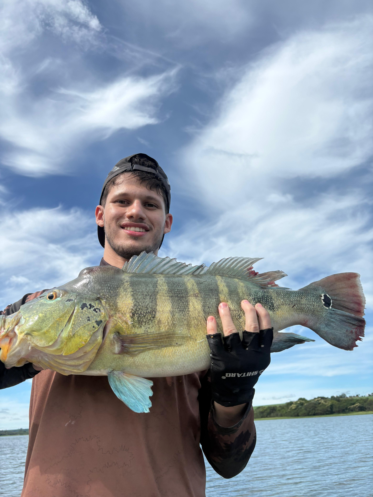

Meu nome é José Guilherme Neves Lemes, tenho 20 anos e nasci no dia 13 de março de 2006.
Atualmente, trabalho como técnico de informática em uma escola e também estudo.
No meu tempo livre, gosto de ir à academia, praticar esportes como futebol e, principalmente, aproveitar a vida.
Gosto bastante de sair com meus amigos, ir para festas e curtir bons momentos. Também gosto de passar tempo com minha namorada, Lívia.
Sou uma pessoa bastante animada, que gosta de se divertir, conhecer lugares novos e aproveitar as experiências que a vida proporciona.
Entre trabalho, estudos, academia, esportes, festas e meu relacionamento, procuro aproveitar ao máximo meu dia a dia.
Esse sou eu, José Guilherme, realizando o trabalho de Web 1.
Entre estudos, trabalho, academia, esportes, pescarias e momentos com minha namorada e amigos, gosto de aproveitar a vida e me divertir.

Estou com minha namorada, Lívia, há 3 anos. Nós nos conhecemos na escola, onde começamos nossa história e, com o tempo, fomos nos aproximando cada vez mais.
Apesar de termos gostos semelhantes e gostarmos de muitas das mesmas coisas, temos personalidades bem diferentes. Acho que justamente essas diferenças tornam nosso relacionamento mais interessante, porque cada um acaba complementando o outro.
Durante esses três anos, vivemos muitos momentos juntos, aprendemos um com o outro e construímos várias lembranças. Amo muito a Lívia e sou muito feliz por ter ela ao meu lado. Tenho muito carinho pela nossa história e por tudo que ainda podemos viver juntos.

No meu tempo livre, gosto bastante de sair e aproveitar momentos com meus amigos.
Gosto de tomar uma cerveja com a galera, conversar, dar risada e aproveitar uma boa companhia. Também gosto muito de frequentar rodeios e shows, principalmente aqueles que têm um ambiente mais animado e reúnem bastante gente.
Para mim, esses momentos são uma forma de me divertir, esquecer um pouco a rotina e aproveitar a vida ao lado das pessoas que gosto.

Essa é uma das várias pescarias que já fiz e, com certeza, ainda virão muitas outras.
Pescar é uma das atividades que mais gosto de fazer, principalmente pela tranquilidade, pela diversão e pelos bons momentos que proporciona.
Cada pescaria acaba rendendo uma história diferente e boas lembranças para guardar.